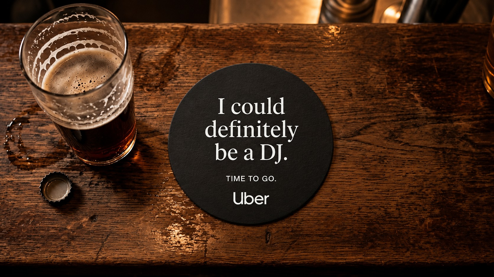
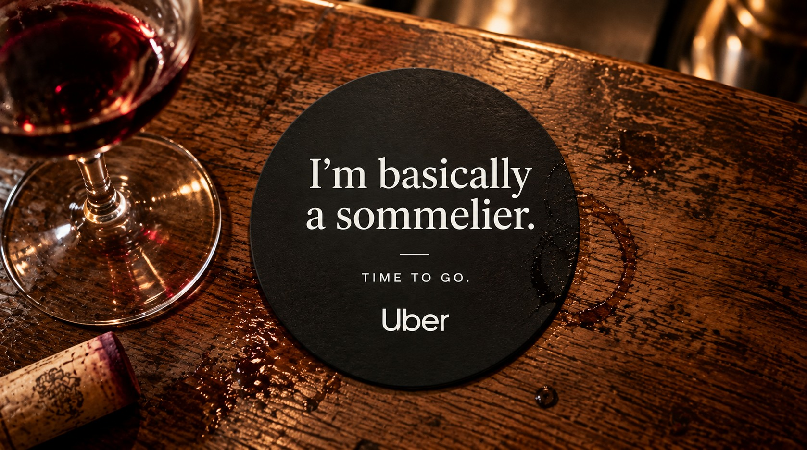
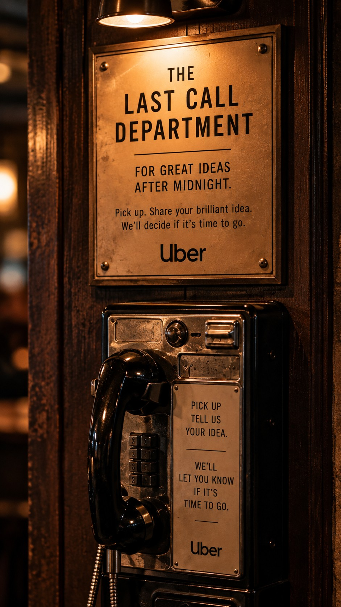
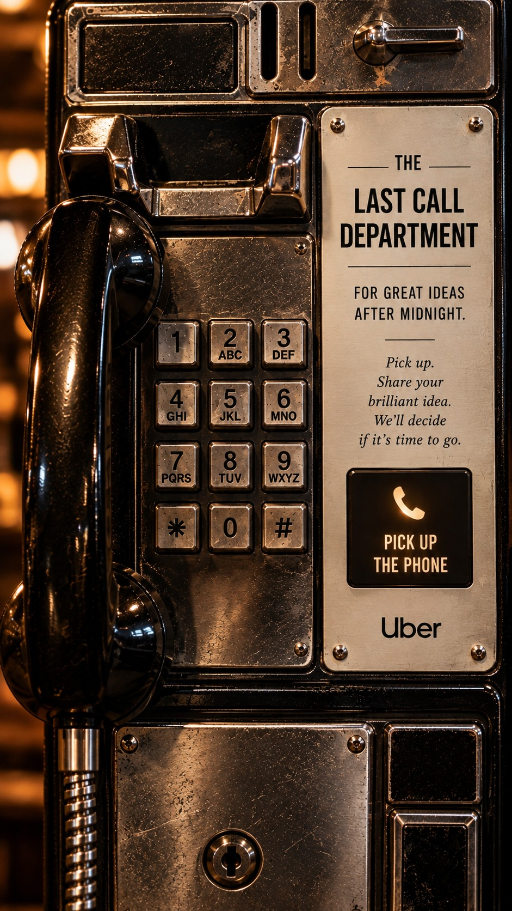
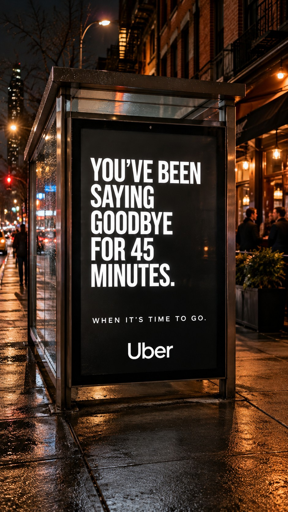
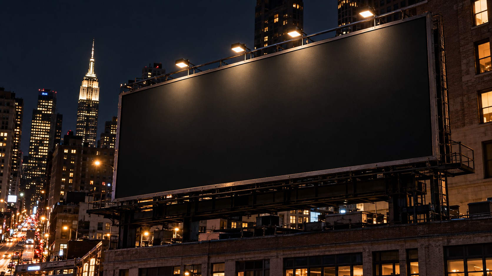
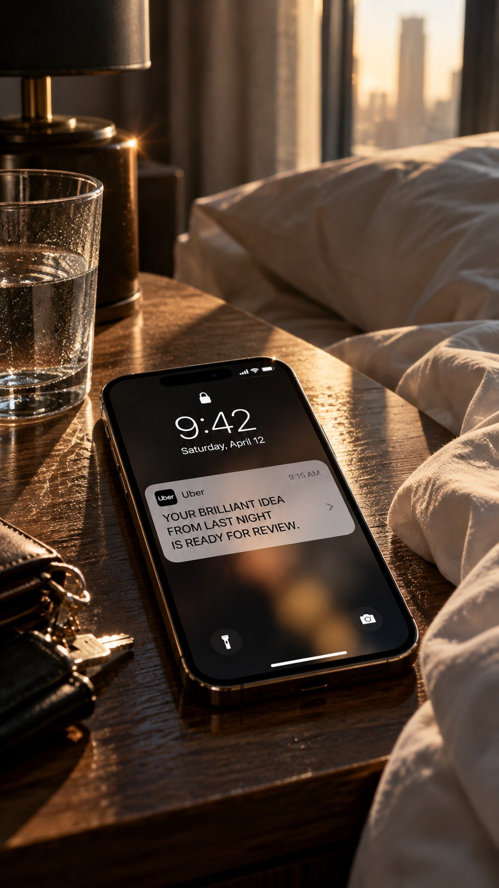

UBER
When it's time to go.
A spec campaign built around the things people say when a good night has gone on a little too long. From bar receipts and coasters to an AI-powered last-call hotline, Uber helps turn the moment into a way home. Spec work. Visuals AI-assisted.

The insight
The insight
Everyone knows the night is over before they admit it. You can hear it.
The idea
The things you say before it's time to go.
On-premise: the coasters
A coaster series built from the lines everyone has heard at last call. Each one ends the same way.




Experiential: The Last Call Department
An old payphone appears in neighborhood bars, offering a second opinion on those brilliant ideas that only seem brilliant after midnight. Pick up the receiver and a deadpan AI operator answers. Every conversation is different. Every case has one thing in common: knowing when it's time to go.


Out-of-home: on the way out
The last word, placed between the bar door and the curb.



A proposed schedule: one digital board, four headlines through the night. Example times. Pick one.
The morning after
Proposed extension Some brilliant ideas sound different in daylight. Callers who opt in could hear their late-night pitch again the next morning. The Last Call Department keeps the receipts.
